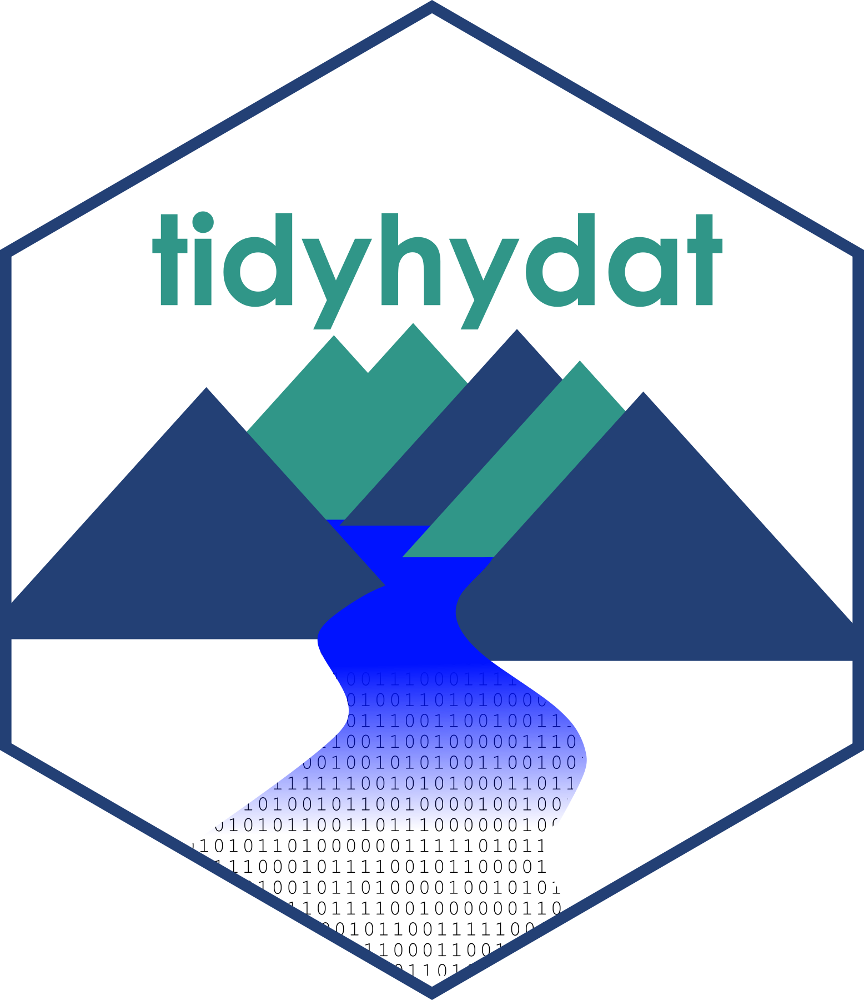

Jan 16, 2018
rOpenSci HQ
Our next rOpenSci community call is coming up on January 31st. Find all the details for the upcoming and all past and future calls at http://communitycalls.ropensci.org/.
Nick Golding, rOpenSci Fellow, on enabling reproducible research in ecology with zoon and simple & scalable statistical modelling with greta
Software 📦
New packages
- A new package
seaaroundus(v1.2.0), for Seaaroundus (http://www.seaaroundus.org/) fisheries data, is on CRAN. Check out the seaaroundus README to get started. Repository on GitHub
Releases
- A new version (
v0.2.0) oftaxais on CRAN. See the release notes for details. Check out the taxa vignette to get started. Repository on GitHub - A new version (
v0.2.2) ofstplanris on CRAN. See the release notes for details. Check out the stplanr vignettes to get started. Repository on GitHub - A new version (
v0.2.0) ofwikitaxais on CRAN. See the release notes for details. Check out the wikitaxa vignette to get started. Repository on GitHub - A new version (
v0.7.0) ofbiomartris on CRAN. See the NEWS for details. Check out the biomartr vignettes to get started. Repository on GitHub - A new version (
v0.2.5) ofropenaqis on CRAN. See the NEWS for details. Check out the ropenaq vignettes to get started. Repository on GitHub - A new version (
v0.3.0) ofsofais on CRAN. See the release notes for details. Check out the sofa vignettes to get started. Repository on GitHub - A new version (
v0.6.0) ofpangaearis on CRAN. See the release notes for details. Check out the pangaear vignette to get started. Repository on GitHub - A new version (
v0.21.0) ofgit2ris on CRAN. See the NEWS for details. Check out the git2r README to get started. Repository on GitHub - A new version (
v0.3.2) oftidyhydatis on CRAN. See the release notes for details. Check out the tidyhydat vignettes to get started. Repository on GitHub - A new version (
v1.0.11) oflingtypologyis on CRAN. See the release notes for details. Check out the lingtypology vignettes to get started. Repository on GitHub - A new version (
v0.2.0) ofmicrodemicis on CRAN. See the release notes for details. Check out the microdemic README to get started. Repository on GitHub - A new version (
v0.1.4) ofopencageis on CRAN. See the release notes for details. Check out the opencage vignette to get started. Repository on GitHub - The package hddtools has been archived on CRAN, but should be back up there soon.
Software Review ✔
We accept community contributed packages via our onboarding system - an open software review system, sorta like scholarly paper review, but way better. We’ll highlight newly onboarded packages here. A huge thanks to our reviewers, who do a lot of work reviewing (see the blog post on our review system), and the authors of the packages!
If you want to be a reviewer fill out this short form, and we’ll ping you when there’s a submission that fits in your area of expertise.
The following nine packages were recently submitted for review:
- coinmarketcapr > Get Cryptocurrencies Market Cap Prices from Coin Market Cap
- Author: amrrs
- Issue: ropensci/onboarding#172
- Reviewers: not assigned yet
- tidync > A Tidy Approach to NetCDF Data Exploration and Extraction
- Author: Michael Sumner
- Issue: ropensci/onboarding#174
- Reviewers: not assigned yet
- skimr > Compact and Flexible Summaries of Data
- Author: Elin Waring
- Issue: ropensci/onboarding#175
- Reviewers:
- PostcodesioR > API wrapper around postcodes.io (free UK postcode lookup and geocoder)
- Author: Eryk Walczak
- Issue: ropensci/onboarding#176
- Reviewers:
- rhmmer > Utilities Parsing HMMER Results
- Author: Zebulun Arendsee
- Issue: ropensci/onboarding#177
- Reviewers: not assigned yet
- oneKP > Retrieve Data from the 1000 Plants Initiative (1KP)
- Author: Zebulun Arendsee
- Issue: ropensci/onboarding#178
- Reviewers: not assigned yet
- treeio > Base Classes and Functions for Phylogenetic Tree Input and Output
- Author: Guangchuang Yu
- Issue: ropensci/onboarding#179
- Reviewers:
- Joseph Uyeda
- other not assigned yet
- MODIStsp > A Tool for Automating Download and Preprocessing of MODIS Land Products
Data
- Author: Michael Sumner
- Issue: ropensci/onboarding#184
- Reviewers:
- hydroscoper > Interface to Hydroscope
- Author: Konstantinos Vantas
- Issue: ropensci/onboarding#185
- Reviewers:
On the blog
.rprofile series
Our fourth post is out in our .rprofile series: .rprofile: Karthik Ram by Kelly O’Briant. Karthik on Twitter -> https://twitter.com/_inundata
Keep an eye out for more posts in this series.
main blog
Sam Albers wrote about his package tidyhydat and his experience with rOpenSci software review in a blog post: 5 Things I Learned Making a Package to Work with Hydrometric Data in R. Check out the review and shout out to the reviewers Laura DeCicco and Luke Winslow.

Our community manager Stefanie Butland wrote about our next community call Writing Packages to Support Research Communities - zoon & greta.
Use cases
If you’ve used rOpenSci software in a blog post or a paper, tell us on the discussion forum and we’ll share it with our community here.
The following 11 works use/cite rOpenSci or rOpenSci software:
- Matthews et al. used rotl in their paper Cophylogenetic assessment of New World warblers (Parulidae) and their symbiotic feather mites (Proctophyllodidae) 1
- Roy et al. used rsnps in their pre-print High dimensional Single Index Bayesian Modeling of the Brain Atrophy over time 2
- Sánchez-Tapia et al. use rgbif and taxize in their book chapter Model-R: A Framework for Scalable and Reproducible Ecological Niche Modeling in the book High Performance Computing 3
- Drost et al. cited biomartr and taxize in their paper myTAI: evolutionary transcriptomics with R 4
- Van de Peer et al. used brranching in their paper Tree seedling vitality improves with functional diversity in a Mediterranean common garden experiment 5
- Albers, S published a paper in the JOSS journal on his rOpenSci package tidyhydat tidyhydat: Extract and Tidy Canadian Hydrometric Data 6
- Dolnicar used RSelenium in her white paper Peer-to-Peer Accommodation Networks: Pushing the boundaries 7
- Oldham & Weeks cited spocc in their paper Varieties of Melampyrum Lineare (Orobanchaceae) Revisited 8
- Krawczyk et al. used rentrez in their paper PlasFlow: predicting plasmid sequences in metagenomic data using genome signatures 9
- Shoub used textreuse in their paper Shifting Debate to Shift Policy: How Frames Influence Policy 10
- Vaidya cited taxize in his Ph.D. thesis Taxonomic Checklists as Biodiversity Data: How Series of Checklists can Provide Information on Synonymy, Circumscription Change and Taxonomic Discovery 11
In the news
The NRGI Institute links to an application they developed for extracting tables from PDFs using tabulizer (github repo) in this tweet :
PDFs are not an ideal format for publication of data. For this reason, over the course of a large data collection project, NRGI data staff members developed an application that simplifies the process of extracting a table from a PDF. https://t.co/yPu7PWFI1x
— NRGI (@NRGInstitute) January 15, 2018
Elin Waring wrote a great blog post Open Science, Skimr and Me
Finally a blog about the @rOpenSci unconf and what came after https://t.co/cKis89CjWV #rstats @StefanieButland @AmeliaMN @michaelquinn32
— Elin Waring (@ElinWaring) December 22, 2017
Aaron Tay wrote a post that referenced our package roadoi: Using oaDOI & Crossref event data API to calculate your institution’s open access citation advantage. We have a package for Crossref event data in the work - crevents - let us know what you think
Gergana Daskalova wrote a great post about working with species/specimen occurrence data Manipulation and visualisation of spatial and population data. She used our package for GBIF data rgbif.
Michael Warner wrote a nice post about using the gutenberger package: Gutenberg Text Mining Practice
Submit news to rOpenSci
Reach out to us with your news suggestions by sending us an email info@ropensci.org or by contacting us on Twitter @ropensci
Keep up with rOpenSci
- Mailing list: Sign up with an email address to get this newsletter sent to your inbox -> ropensci.org/#subscribe
- Alternatively, you can subscribe to this newsletter via our XML feed at https://news.ropensci.org/feed.xml or our JSON feed at https://news.ropensci.org//feed.json
- rOpenSci on Twitter: @ropensci
- The rOpenSci blog at ropensci.org/blog - you can subscribe in any RSS aggregator, or manually via https://ropensci.org/feed.xml. We also announce new blog posts on our Twitter account.
Footnotes
-
Matthews, A. E., Klimov, P. B., Proctor, H. C., Dowling, A. P. G., Diener, L., Hager, S. B., … Boves, T. J. (2017). Cophylogenetic assessment of New World warblers (Parulidae) and their symbiotic feather mites (Proctophyllodidae). Journal of Avian Biology. https://doi.org/10.1111/jav.01580 ↩
-
Roy, A., Ghosal, S., & Choudhury, K. R. (2017). High dimensional Single Index Bayesian Modeling of the Brain Atrophy over time. arXiv preprint arXiv:1712.06743. https://arxiv.org/abs/1712.06743 ↩
-
Sánchez-Tapia, A., de Siqueira, M., Lima, R., Barros, F., Gall, G., Gadelha, L., and da Silva, L. Model-R: A Framework for Scalable and Reproducible Ecological Niche Modeling. In High Performance Computing - Fourth Latin American Conference, CARLA 2017. Communications in Computer and Information Science, vol. 796. Springer, 2017 http://www.lncc.br/~lgadelha/publications/model-r-carla-2017.pdf ↩
-
Drost, H.-G., Gabel, A., Liu, J., Quint, M., & Grosse, I. (2017). myTAI: evolutionary transcriptomics with R. Bioinformatics. https://doi.org/10.1093/bioinformatics/btx835 ↩
-
Van de Peer, T., Mereu, S., Verheyen, K., María Costa Saura, J., Morillas, L., Roales, J., … Muys, B. (2018). Tree seedling vitality improves with functional diversity in a Mediterranean common garden experiment. Forest Ecology and Management, 409, 614–633. https://doi.org/10.1016/j.foreco.2017.12.001 ↩
-
Albers, S. (2017). tidyhydat: Extract and Tidy Canadian Hydrometric Data. The Journal of Open Source Software, 2(20), 511. https://doi.org/10.21105/joss.00511 ↩
-
Dolnicar, S. (2017). Peer-to-Peer Accommodation Networks: Pushing the boundaries. http://www.oapen.org/download?type=document&docid=640674 ↩
-
Oldham, K. A., & Weeks, A. (2017). Varieties of Melampyrum Lineare (Orobanchaceae) Revisited. Rhodora. http://www.rhodorajournal.org/doi/abs/10.3119/16-13 ↩
-
Krawczyk, P. S., Lipinski, L., & Dziembowski, A. (2018). PlasFlow: predicting plasmid sequences in metagenomic data using genome signatures. Nucleic Acids Research. https://doi.org/10.1093/nar/gkx1321 ↩
-
Shoub, K. 2017. Shifting Debate to Shift Policy: How Frames Influence Policy. https://pdfs.semanticscholar.org/3997/a040748a3bb6a66085240bdf8b771a641efe.pdf ↩
-
Vaidya, G. G. (2017). Taxonomic Checklists as Biodiversity Data: How Series of Checklists can Provide Information on Synonymy, Circumscription Change and Taxonomic Discovery (Doctoral dissertation, University of Colorado at Boulder). https://search.proquest.com/openview/e04ca58442fa1725c8bc31b2cc0abf0f/1?pq-origsite=gscholar&cbl=18750&diss=y ↩